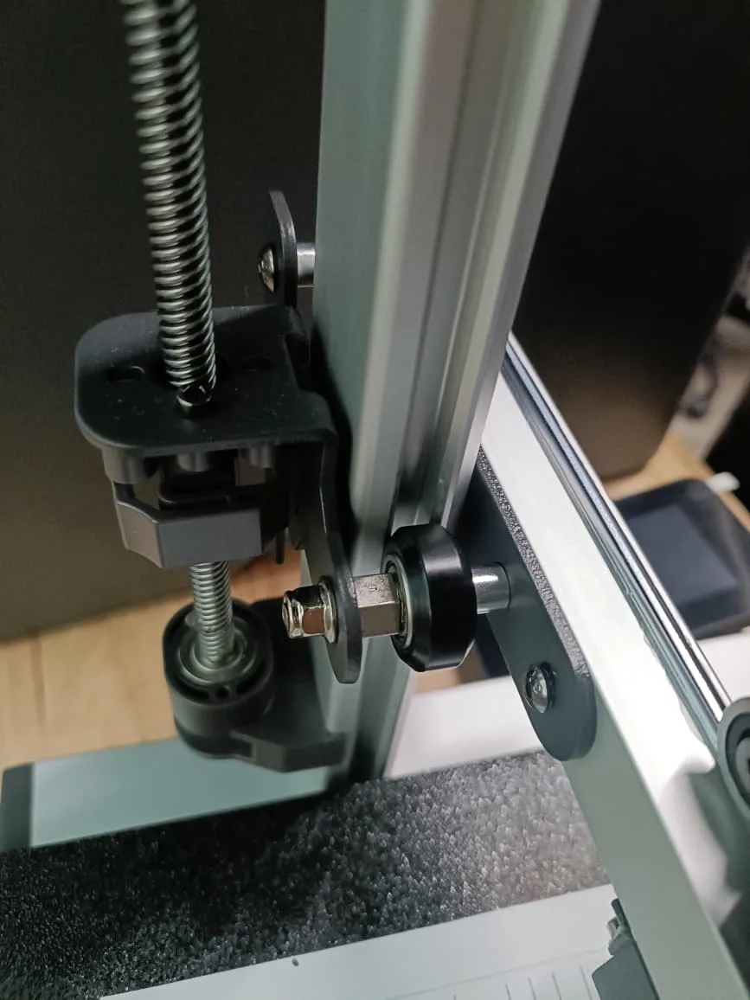
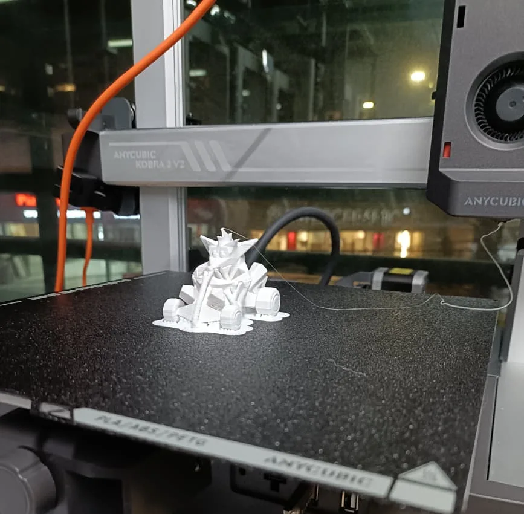

Anycubic Kobra 3 con el eje X que rechina y arrastra: baleros y lubricación
· Caso del taller
De una semana a otra, la Kobra 3 V2 empezó a sonar distinto. El eje X arrastraba y rechinaba en cada movimiento. Es de esas fallas que asustan porque suenan feo, pero que muchas veces se resuelven con ajuste y grasa si se atienden a tiempo.

El síntoma
El aviso fue sencillo: «esta semana empezó a arrastrar y a sonar el eje X». No había error en pantalla ni capas corridas todavía. Solo el ruido, cada vez que el cabezal iba de un lado a otro.
Ese momento es justo el bueno para revisarla. Un eje que rechina y se sigue usando así acaba desgastando más piezas, y lo que hoy es grasa mañana puede ser una capa desplazada a media impresión larga.
Cómo lo revisamos
Primero descartamos lo más común. Revisamos la tensión de las bandas, porque una banda floja también hace ruido y da piezas con capas movidas. Las bandas estaban bien.
Después movimos los ejes a mano y con la impresora en marcha, uno por uno. Ahí salieron dos cosas:
- Un rechinido en el eje X por falta de lubricación. El ruido que oía el dueño.
- Un balero con ligero movimiento en el eje Z. Todavía no daba problemas visibles, pero un balero con juego es una vibración que tarde o temprano se nota en las paredes de la pieza.

La reparación
Ajustamos los baleros para quitarles el juego y lubricamos los ejes. No hubo que cambiar piezas.
Luego vinieron las pruebas. Primero una impresión corta para confirmar que el ruido se había ido, y después una impresión larga de cinco horas y media. Las impresiones largas son las que de verdad dicen si un eje quedó bien, porque cualquier juego o roce se acumula capa tras capa.

Qué puedes revisar tú en casa
- Apágala y mueve el cabezal a mano. Debe deslizarse parejo. Si sientes que se atora en un punto o que raspa, ahí hay algo.
- Revisa la tensión de las bandas. Al presionarlas deben regresar firmes, sin quedarse colgadas.
- Busca juego en las ruedas y baleros. Toma el cabezal o la cama y trata de moverlos en la dirección en que no deberían moverse. Si hay juego, se siente un pequeño golpe.
- Limpia y lubrica los ejes. Con la grasa o el lubricante que indica el fabricante, sin exagerar. Grasa de más junta polvo.
Si después de eso sigue sonando, o si encuentras un balero que no se deja ajustar, conviene que alguien lo revise antes de que la pieza se dañe más.
Sigue leyendo
¿Tu impresora tiene algo parecido?
Diagnóstico en el taller con fotos de lo que encontramos y la cotización antes de cambiar cualquier pieza. Recibimos impresoras de todo México por paquetería.